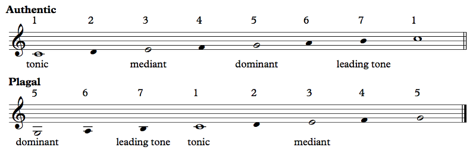
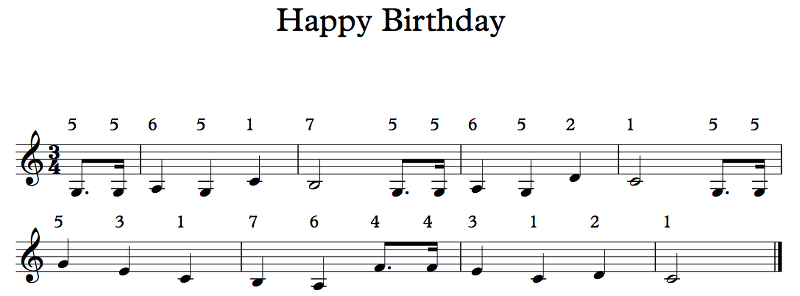
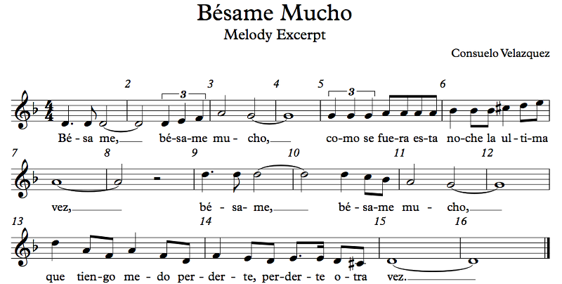

OFFTONIC THEORY — Chapter 7: Modes and Scales
7.3 The Principal Modes
Western music began with the eight modes of Gregorian chant. This was a descendant of Byzantine chant, the ancient Greek modes (with names similar to our modern ones, but they're completely different), and other modes from that era and earlier. Music has been played since the dawn of civilization, and for multiple musicians to play together it was necessary that they agree on which notes to use. A lyre, for example, would be tuned a certain way, and if you wanted to play the same song you had to tune your lyre the same way. That was basically a mode. From there, we get to Boethius's comprehensive list of notes (A B C D E F G H I K L M N O; the letter J hadn't been invented yet), eventually a formulation of Gregorian modes based on those notes, eventually more and more modes, and finally, around the Renaissance, all those modes coalesced into just two: major and minor.
Why did we lose all the other modes?
That's a great question. The short answer is tonal harmony. We're not going to talk about the Gregorian modes in this chapter, but hopefully by the time we've studied more modes it will be clear why tonal harmony works well for major and minor but not so well otherwise. Let's start with the major mode. We already talked about this mode quite a bit back in Chapter 4, but it's worth reviewing.
7.3.1 Major
This time it's going to be a little different. I'm not going to sound the scale out for you; you can do it yourself on the Offtonic Keyboard or the Offtonic Scale Keyboard. Also, I'm showing you two versions of the major scale:
Example 7.1
What's up with the second scale?
Meet the first new-ish characteristic of modes that we're encountering: whether the mode is authentic or plagal. What you're seeing here is two versions of the same C major scale, but one has the range of an octave from C to C, and the other has the range of an octave from G to G. Most melodies actually do stay mostly in one or the other, with maybe a note or two off in each direction.
You're also seeing note functions. We talked about the stability of the scale degrees back in Chapter 4, and that was actually a mode discussion rather than a scale discussion, because we were talking about how these notes are used. The important thing in both of these versions of C major is that the tonic, the note that all the other notes tend towards, is C, not some other note. The dominant is the note that sets up the tonic; the mediant is the note that helps identify the tonic, and the leading tone strengthens the tendency towards the tonic by leading to it. All of these are present in both authentic and plagal versions of the major mode (these descriptions are very general; the actual use of these notes is not easily describable in words), but the difference is where the tonic is in relation to them. In the authentic mode, the tonic is at the bottom, while in the plagal mode, the tonic is in the middle.
Let's see some examples. You've already seen these songs. The first is Somewhere Over the Rainbow, also in Example 5.8:

Example 7.2
You changed keys to C major. But why isn't there a recording?
I did. Maybe I shouldn't have. But I want to demonstrate this major scale. There's no recording because you can sing it yourself. I gave you the scale degrees. You should be able to do this. At this point, recordings of easy things will just get in the way. I'll still show you recordings of things that are harder to hear on your own, but simple melodies should not be hard anymore. If it still is hard, sing and sing some more, and use a keyboard to figure out the notes. If you want to learn music theory, you actually need to do this.
Anyway, this melody — this segment of the melody, anyway — is in authentic major, especially in the first phrase. The range is very neatly an octave. In the second phrase, it dips down to the 6 below for one note, which, to be fair, really is a point against the authentic mode here. The 7 below the tonic in the seventh bar is not problematic, though. What I want you to see is that the melody primarily hangs out between C and C. Most of the time, the tonic is the lower C, and the higher C is not often reached; it's stable, but it's too high. For more final-sounding phrases, though, the higher tonic is a valid place to end. Keeping with the theme of classic musicals, here's a lot of people's first real introduction to the major mode (which, again, you should sing yourself, because I'm not going to play you a recording):

Example 7.3
Never heard this before. Am I supposed to know it or something?
You've... Wh... Holy shit, dude. What kind of upbringing did you have? I fear for American culture, let me tell you. My mother played this for me when I was little. The whole movie, actually, but honestly it gets boring after the first hour or so for a 5-year-old. And the stuff with the Nazis... Yeah. But this part I knew! This song, and My Favorite Things, Edelweiss, the song in the convent about solving a problem like Maria, Sixteen Going On Seventeen, So Long, Farewell, The Lonely Goatherd, holy crap, that's a lot of them. There are a bunch of other, less memorable songs too. The hills being alive... Actually, no, that one I knew. Ford Every Mountain? Climb Every Mountain? I guess that makes more sense. There's one where Maria sings "I have confidence in me". I don't really remember that one. There's probably more, because that's a music-packed musical. I still remember most of this stuff.
Now, where was I? Right. Authentic major. The "Do, a deer" bit stays very well-bounded between C and C, but unlike Over the Rainbow, it ends high instead of low. But it starts low, so there's a little turnaround (the "oh, oh, oh") to get back to the start. The second excerpt ("So Do La...") goes above C for the second-to-last note, which is actually the only time this concept is introduced. "Do, a deer" explains the octave, and "So Do La" is the example of how to use the notes in the octave. This naturally raises the question: what happens outside the octave? The "Re" at measure 23 is the answer to that question. There's nothing new beyond the octave; it's just the same notes but higher or lower. (It should be emphasized that while Maria teaches the kids to sing using solfège, I much prefer scale degrees because I fucking hate that solfège shit. No offense. Wait, I take that back. Yes offense. Be offended, see if I care.) Of course, we already covered all this, but as an introduction to music theory in general to a kid who knows literally nothing about music yet, just knowing these notes is a pretty big deal. Rodgers and Hammerstein scored a big one for musical education for the time in which their massively popular musical was popular.
When I was taking music theory in college, our instructor had us sing the following from the major scale: 1, 2, 1, 3, 2 1, 4, 3 2 1, 5, 6 7 1, 6, 7 1, 7, 1. The idea is that you pause on each new scale degree and then count off towards the tonic in the proper direction. He also taught us hand signals for the notes of the scale, and I wish I could share them with you because they were really nice to use, and they're remarkably easy to pick up on if you practice a bit. There are slightly different versions of them, and they're easy to find on YouTube. Here's one example. But the point of singing those numbers (with the hand signs at the same time) was to show the tendencies of these notes. You can see that there are two regions, kind of like watersheds, that each flow to their respective tonics. I'd argue that the 5 is right on that watershed line; my professor had it going up to 1, but it's just as likely to go down to 1. Here's a redo of Example 7.1 showing this:

Example 7.4
The authentic mode looks like a mountain, while the plagal mode looks like a valley. Of course, the extended major scale, with further octaves in both directions, is kind of wavy, with the 1's being at the bottoms and the 5's being at the tops. But when you take just a one-octave segment, that segment will end up being a single mountain or a single valley.
Speaking of which, this is the most classic example for plagal modes:
Example 7.5
See how the song neatly fits between G and G, but the tonic is C in the middle? That's the plagal mode.
So I just look at the range and I can figure out if it's plagal or authentic?
Not quite. You need to decide if the melody spends time around one tonic versus between two tonics. And there doesn't have to be an answer. The song could be limited in range, or it could spend time below and above one tonic and below the next one. I'd say that if the song stays between 1 and 5, it's authentic, and if it stays between 5 and 1, it's plagal. If the song only leaves the range for a little bit, maybe you don't need to count that. Really, if you can't decide whether a piece is plagal or authentic... then leave it undecided.
That said, it's not too uncommon for a song to switch between authentic and plagal, usually with authentic verses and plagal choruses. It happens in Circle of Life. See if you can figure out where it switches. Another great example is Werner Thomas's Chicken Dance:

Example 7.6
What. What did I just witness?
Interestingly enough, the Chicken Dance is not an American song; it's by a Swiss guy. It's known throughout the Western world in different forms, though all of them with bird-related titles ("Der Ententanz" means "The Duck Dance"), and in Brazil, it's "Baile dos Passarinhos", "Ball of the Birdies". It was used as a theme song for Gugu Liberato's Viva a Noite variety show, and that's where I heard it.
The structure of the song is quite simple, with two very contrasting sections A and B. A has lots of pecking, short and quick notes, while B is smoother and more legato with longer notes, and, to me, recalls flying. Within each of these two sections, we have four 4-bar phrases, mostly very similar to each other. In section A, we have the motif in the pickup bar at the level of the 5 of the scale, repeated three times, but the third time it resolves to the 7, which then goes down to the 4.
Those are unstable; how could it be resolving?
Great question. I lied. That line doesn't resolve to the 7. What's happening here is something we'll explore in later chapters called a cadence, and in particular, this one is a half cadence. A cadence is when the music reaches the end of a phrase and resolves, usually to the tonic chord. Oftentimes, though, a phrase will end on the dominant chord in order to set up a true ending to the tonic later, like a question/answer structure. That's called a half cadence, and that's what's going on here.
Going on, the second phrase starting at pickups to 5 has exactly the same notes as the first phrase, just down a step, so it resolves to the 6 and then down to the 3. The 6 isn't really part of the harmony here, which is just the tonic chord, C major. The third phrase, from pickups to 9, is the same as the first. Then, the fourth phrase, from pickups to 13, starts out like the second but it resolves up to the tonic.
Up until now, we've been staying within the C to C octave, mostly centered around the 5. When we resolve to the tonic at measure 15, we've switched registers: we're now hovering around the upper C, not the G. That's the shift from authentic to plagal. The B section actually has a very similar range on the low end to the A section, but the way the notes are organized in the A section around the G in the middle and in the B section around the C on top is what's important here.
What are those small notes?
They're called cues. If you were playing this song, you wouldn't play those notes; someone else would. The reason I included them here is because they're actually pretty important to the piece. I didn't need to bother with the entire accompaniment, but these are the bits that stick out, and pretty much every rendition of the song has them. For example, if I yelled out "SWEET CAROLINE", you would almost certainly yell out "DA DA DAAAA" in response, right? It wouldn't be right to leave that part out! That's what I'm doing here.
So is the song still in C major if it has that F# in the cues?
Uh, yeah. That's called a chromatic passing tone, and as you can see, it connects two notes that are in the scale. But even if it weren't a passing tone, even if it actually represented a small modulation to G major or whatever, the rest of the song is still so strongly in C major that it doesn't take us out of the mode.
We didn't really analyze the B section here, but the phrase structure is really simple — not as simple as in the A section, but it's pretty close! I'll let you figure it out on your own. See if you can spot which bits repeat. Note that measures 23 and 27 are basically the same; the one at 27 just resolves to the B a beat later.
Now, the major mode also carries with it an affect, especially in Western music. We tend to hear major as somehow happy and bright.
Heh. You meant "effect", not "affect". "Affect" is a verb, and "effect" is a noun.
As I was saying, the major mode often has a "happy" affect in Western culture. Often does not mean always, though. When a song goes from minor to major, it usually has this brightening effect, but do not assume that just because a song is major that it's happy, or vice versa. You can have sad music in major and you can have happy music in minor or other modes (and other cultures do both of these). Also, "happy" and "sad" are a very limited range of emotions, and they're not even really opposites of each other. You should be aware that the major mode (as well as major triads, but not so much major 7th chords) is often felt, in the West, to be relatively happy and bright, but you should not assume that this connection always exists.
Why does this major/happy thing happen?
I don't know? The theories people make about this could run the American cattle industry with the sheer amount of male ungelded bovine excrement they involve. Some people say it's because the major triad is close to the 4:5:6 JI triad, while the minor triad is only 10:12:15, and somehow this is important or something because 4:5:6 has smaller numbers and they're all harmonics of the root. That's nice, but it's bullshit. I think that major is brighter than minor because the flavor tone, the third, is higher in major than in minor, but the third is consonant in both. Somehow the triad really is fundamental in some way, but anything other than a 3 or b3 breaks the chord, and the 3 being higher than the b3 means that it's brighter and, by extension, happier.
::sniff:: That smell... Reminds me of the pastures... Oh, yeah, I know what it is. ::cough::BULLSHIT::cough::. Sorry, I'm allergic to bullshit.
But, you know, the Chinese character for "bullshit" is the same as the one for "imagination".
Oh, wow, is that actually true?
No. I don't know Chinese.
Yeah, that's what I thought. Stop triggering my bullshit allergy.
Fine.
Modes also tend to have characteristic scale degrees, which are the notes of the scale that most strongly suggest the mode. In the case of the major mode, the characteristic scale degrees are generally the 3, 4, and 7. This is not a precise science since other scales can use the same notes, but if you want to convey the feel of the major mode, using these notes in some way might be a good idea. Similarly, avoiding these notes is a great way to make the mode more ambiguous.
There's a big caveat here, though. Common Practice music treats the 4 and 7 as mandatory even in minor, making the 3 the differentiating factor between major and minor. Music outside Common Practice often avoids the 4 and 7 on purpose since they're unstable. In extended tonality, including pop music, music often does not stick to the notes of the mode, so avoiding the 4 and 7 does not create ambiguity so much as simply establishing a more generalized major key. We'll see examples soon enough.
For now, let's look at the other principal mode:
7.3.2 Minor
The minor mode actually uses three scales:

Example 7.7
Whoa! That's weird! Why?
To confuse music students, mainly. No, just kidding. But that's certainly one effect! The idea here is that the leading tone, the 7, is very important in Common Practice music, and the tritone between the 4 and 7 is what propels music forward. You can see that in the natural minor scale, the tritone is between the 2 and the b6. That's no good (except actually it is, as we've seen in the past few chapters, but whatever). So, the b7 is altered up to a 7 in order to make that happen.
But that doesn't explain those three scales.
I suppose not. So let me try to explain it in more detail. Common Practice music is, first and foremost, based on harmony. Before what we call Common Practice, we had multiple voices at the same time, sure, but the vertical combinations of notes they sang didn't really have identities of their own. Eventually, those vertical combinations crystallized into chords, and one of those chords, the V chord, was deemed necessary to make a cadence, a stop in the music, that sounds convincing. Whether it went V - I or V - i depended on the mode, but that leading tone in the V chord was what set up the forward motion. Without it, the cadence wouldn't be a real cadence. Before common practice, there was actually another possibility: b2 - 1, approaching the tonic from above by half step instead of from below. This is called the phrygian cadence, and Common Practice rejected this for some reason (we will not, and we'll talk about it plenty both in this chapter and later chapters). The upshot is that V - i was required even in minor, so you need that 7 there. For whatever reason, the idea of raising the b7 to a 7 in minor in a V chord has the name of the "harmonic minor scale". It's not a real scale!
It's not?
Well... It depends on what you really mean by "scale". The notes used in minor harmony come generally from the harmonic minor scale. But only generally. See, V and viio chords have a 7 in them, but bIII and bVII chords have a b7. Actually, there are times when a minor v chord is called for (just never in a cadence towards i, at least not in Common Practice music), and that has a b7 as well. The 7 is only used in V and viio chords.
In contrast, you have the melodic minor scale. The harmony requires a 7 in a V chord, but if you're playing a scale, the previous note is b6. Going from b6 to 7 creates an augmented second, which Common Practice composers thought was awkward (though in modern times there are plenty of occasions where we really like that sound). The solution? Raise the b6 too! Make it a 6. In the melodic minor scale, which is where minor melodies draw their notes (kinda), the b7 is raised to a 7 when functioning as a leading tone to the tonic, and the b6 is raised to a 6 when it's going up to the 7. On the other hand, when coming down, the 7 - 1 motion is not needed, so the 7 can be dropped in favor of the b7, and the 6 is unnecessary as well and can be a b6. In the Offtonic Scale Keyboard I included both versions of the 6th and 7th degrees in the Minor scale type; you can play around with that.
So I use 5 6 7 1 going up and 1 b7 b6 5 coming down? What if we go down and then back up, like 1 b7 b6 7 1? Or is it 1 b7 6 7 1? How does that work?
Ehhh, it's not so strict. Music books like to emphasize that the melodic minor scale is different ascending from descending, but real music isn't a scale. The 7 is used in a V or equivalent chord (like viio), whether it's going up or down, and the 6 is used whenever it's necessary to prevent an augmented second with the 7. You could easily have b6 b7 1 when it's not a V - i cadence, like for example if the whole thing is over a iv chord. And you might want to use the 7 outside of a V chord when it's simply in close proximity to said V chord.
What if I wanted to do something like bVI - bVII - i or v - i?
You can totally do that, but that's not the Common Practice minor mode that we're talking about. Both are actually quite common (I'd actually avoid bVI - bVII - i because it's so overdone).
So let's see an example, shall we? Again, I won't include a recording. Sing it yourself.
Example 7.8
This is the incredibly famous Mexican song Bésame Mucho, written by Consuelo Velazquez and recorded by hundreds of other artists, maybe even thousands, around the world and in many styles. As you can tell, it's in D minor — see all the emphasis on D. Since the song occupies the space above the low D, it's in an authentic minor mode rather than plagal. Yes, minor can be authentic or plagal as well. As you can also see, the 7th is raised, here at measures 6 and 14, when it acts as a leading tone, but not in measure 10 when it doesn't.
What about the Bb in measure 6? Shouldn't that be raised as well, since the melody line is ascending?
Kinda, yeah. But Consuelo Velazquez did not choose to do that. I think a composer like Mozart might have. A composer like Bach might have instead lowered the last Bb down to A, so that instead of the Bb - C# augmented second, you'd have the A - C# major third, which is not objectionable. Instead, writing in the 1940's, Velazquez was perfectly happy with the sound of the augmented second there.
Is it not in the minor mode, then?
It depends on how strictly you care about this stuff. This is kind of a borderline case because the Bb is structurally important here. It's part of the chord. The only "bad" style here is in the voice leading. I'd say we're still in the classically-defined minor mode, rather than a folk mode or something like that.
We can do a bit of melodic analysis on Bésame Mucho. I like to point out melodic contour and parallelism, and this song (well, this part of this song) uses them interestingly. Measures 1 through 8 are basically going up from D, building tension with the trip up to the E before releasing it with the A at the end of the phrase. Measures 9 through 16, on the other hand, have very similar rhythm, but it goes from the high D down to the low D. In particular, measures 9 and 10 are the same as measures 1 and 2, but upside-down. Same words, even! Then, while 5 and 6 are just a scale going up, 13 and 14 have a different three-note pattern four times, going down each time.
The melody starts down at very low tension, then it ramps it up but leaves it unresolved halfway through; the second phrase starts with high tension and it resolves a bit, and then it really resolves the whole thing over the last four bars. All throughout, it repeats rhythmic and melodic ideas, modifying them in ways that keep them recognizable yet with a different feel. All of this contributes to making a memorable melody. When you're writing a melody, which is one of the hardest things to do well in music, giving the melody a contour that properly builds and dissipates tension while repeating familiar motifs is one of the best ways to have your audience feeling satisfied and humming that melody later. It's not the only way, of course. You can also just have it go on forever while repeating a particular phrase over and over again.
That was fun!
I KNOW! I got to play in the pit for a production of A Little Night Music once when I was in grad school. That show has some great moments, but Weekend In The Country is by far the most fun. And the key is a fairly long melodic structure where the words "a weekend in the country" repeat over and over and over and over. Repeat something enough times, and it becomes a big deal when everyone does it together, and this is what happens here. There are four duets going through the melody, and then finally everyone sings the chorus together, some contrasting stuff happens, and everyone sings the chorus together again. Plus, fast 6/8 makes for a catchy and dancy rhythm. Stephen Sondheim is an extremely talented lyricist and composer, and even just as a composer he's one of the best.
Anyway, minor. Weekend In The Country was not in minor. Sorry about that digression. So here's another piece in minor, this time a very famous Bach lute piece which is basic repertoire for any classical guitarist (for which I'll give you a recording too since it's in two voices):

Example 7.9
Here you can see very clearly the use of melodic minor in measures 2 and 6. Measure 1 has a D#. Why? Well, look at the bass note, a B. This makes the D# part of the V chord in Em, which requires (in Common Practice music, anyway) the raised 7th. On the other hand, measure 7 has D natural. Why? The ending of this excerpt should tell you the answer: we start in E minor, but we end in G major! The D is actually effecting a modulation right there! The first time through the repeat, it's just a brief modulation, but the second time, we stay in G major for a while. You can listen to the entire piece if you want (it's a minute and a half, very short), or read about it on Wikipedia.
Is this plagal or authentic?
Good question. I'd say the first two measures are plagal, while measures 3 and 4 are authentic. At measure 7, you could argue that the first chord is the pivot, which would make 7 and 8 authentic G major. Notice that I'm only talking about the melody. The bass can be considered a countermelody, a melody that sounds against another melody, and that one's authentic the whole time.
Pivot?
In a modulation — that is, a key change — there's often a moment that belongs to both the old key and the new key. This moment is the pivot. It can be a chord, like the G major chord at the downbeat of 7, which is both bIII in Em and I in G. It can also be just a note, or the modulation could be completely abrupt. In Bach's music, you're far likelier to find modulations set up with a pivot chord than anything else, and you will find them because modulation was one of the primary ways you built interest in your music during the Baroque and Classical periods. The issue with pivot chords is that two keys will generally only have similar chords if they're closely related (for example, at most one additional flat or sharp in the key signature), which is totally OK because they didn't want to modulate to distant keys back then anyway. Pivot notes are useful for smooth modulations to more distant keys, as was more popular in the Romantic period.
What's BWV, down below the title of the piece?
That's known as a catalog number, in this case, to the catalog called Bach-Werke-Verzeichnis. All of the known pieces by J. S. Bach are listed in this catalog, and for clarity, whenever people refer to one of Bach's pieces, they like to include the catalog number as well. Other composers, like Schubert and Mozart, have their own catalogs. Many composers opt to stick an opus number in front of their titles for basically the same reason. Using numbers means that you can more easily get away with not coming up with clever titles. Shostakovich, for example, wrote more than one set of 24 piano preludes; if you want to play Op. 34 No. 14, a beautiful piece (pay attention to the contour of the entire piece), that's going to be different than the 14th prelude in some other set.
By the way, were these pieces, Bésame Mucho and Bourrée... sad?
Sad? Uh, no, not particularly, why do you ask?
Yeah, see? Music in minor keys is not necessarily sad. The Shostakovich prelude, in Eb minor, might be considered sad, but not the other pieces. Still, minor keys are actually somewhat unpopular in American rock and pop music. Only somewhat. There are still plenty of pop songs in minor, but they tend to be more in natural minor than the minor mode we're talking about, with the major V chords. We'll get to that in a bit.
The characteristic notes of minor are... 2 and b3. Basically. Because you can do anything you want with the 6th and 7th degrees and stay in minor, pretty much, so these are the defining notes of minor. I'm sure you'll find people who say otherwise, but the way the minor mode is used classically, having the b6 as a characteristic tone is a bit too unreliable. You can include it if you want, with the caveat that you may have to raise it to a 6 sometimes.
7.3.3 "Tetrachords"
Scare quotes? Oh no. What now?
A tetrachord is... four notes. Generally we talk about blahblahchords (trichords, tetrachords, pentachords, hexachords, heptachords) not as chords but as scale fragments, and in Western theory we like to break up the scale into two tetrachords, meaning four notes. So C major has a lower tetrachord, C D E F, and an upper tetrachord, G A B C. It took me a long time to understand why anyone ever bothered to mention this in theory books, mostly because it's only a curiosity the way it's explained. I think it's much more useful to break the scale up differently:

Example 7.10
You can think of these different... scale parts (the Arabic word is jins, from the Greek genus, plural ajnas, but I don't want to be too confusing) as levels on the scale where stuff happens. You can break the scale up into two pieces, the lower pentachord and the upper tetrachord (and they do overlap), or into three pieces, the lower trichord, the middle trichord, and the upper tetrachord. Of course, in plagal music, these positions are shifted; the upper tetrachord goes on the bottom. You could argue that in the second half of Example 7.6 (the Chicken Dance), it's actually the middle trichord that goes on the bottom. Honestly, this isn't an exact science, but it's a useful way of thinking about music. You can transpose melodies or motifs from one level to another to create variety. Bach loved to do this in his fugues:

Example 7.11
This is from the Art of Fugue, Contrapunctus I (played here by a brass quintet, a popular choice because it sounds so great, but Bach didn't actually specify the instrumentation so it's not wrong, though they did change the key). The Art of Fugue is famous for Bach having died while writing it. It contains 14 fugues, each labeled Contrapunctus with a number, and 4 canons using different devices. Contrapunctus XIV is famously unfinished; Bach actually left off shortly after introducing a subject based on his own name, with the notes B A C H.
Wait, H?
Remember? In German, B actually means Bb and H means B natural. So B A C H is actually Bb A C B. The Germans might have been silly, but we did get Bach's name as a motif (a highly chromatic one at that), so it's not all bad. Anyway, the entire Art of Fugue is based on the same subject, that in Example 7.11. Some fugues use the subject in inversion (upside-down), some use it in (rhythmic) augmentation (longer note values) or diminution (shorter note values), and some, like the four Canons, use a subject or theme that's more loosely based on it.
In a fugue, traditionally, the subject is stated in one voice, and then the answer is stated in another voice, followed by the subject in a third voice and an answer in a fourth voice, or something like that. This is known as the exposition. The music then proceeds, stating the subject in various voices, in different keys, etc. Fugues are awesome. Seriously.
Now, the answer is usually up a fifth from the subject, but it's not generally a direct transposition. Oh no. Instead, it's moved up a pentachord or tetrachord. So, if the subject is in an authentic mode, the tonal answer is in a plagal mode. (You can also have a real answer, which is a direct transposition up a fifth.) I'm not sure if Bach really was thinking in these terms, though. What we usually see is that if the 5 is used in the subject, in the answer it becomes the 1, but only the first time it occurs. So it's not a perfect transposition. But it's close enough, I think! In Example 7.11, you can see that the subject goes up and down about D, while the answer goes up and down, playing approximately the same music, around A. We do take a brief detour into A minor, with the G# and B natural, but we resolve back in D minor by the end. What we can see is that the subject takes place almost entirely in the lower pentachord of D minor, while the answer takes place almost entirely in the upper tetrachord, but they're both D minor.
While we're at it, let's take a look at the subject and answer in inversion, as present in Contrapunctus III.

Example 7.12
It's the same business, but the details are different. Here, the subject is plagal and the answer is authentic. The answer is more similar to the right-side-up subject, isn't it? But the subject begins and ends on the 1 while the answer begins and ends on the 5. You can also see the B natural in the subject; since we're going up from A to D, we use the 6 instead of the b6. In the right-side-up subject and answer, we didn't run into this possibility. Here in inversion, though, we don't have as clear-cut a difference between levels. While the original subject stays mostly in the lower pentachord and the original answer stays mostly in the upper tetrachord, the inverted answer does stay mostly in the lower pentachord, but the inverted subject is more spread out, from the upper tetrachord to the lower trichord. Why? Because Bach wanted that held C# in the subject! He clearly started from the answer, which is a very neat mirror of the original subject encompassing the same pentachord, and transposed that to get the inverted subject. And yet, it's still completely recognizable. Bach was the world's greatest genius of the fungal form. Fugal form. I meant fugal.
I'm picturing Bach as a spore beast.
...Me too.
Speaking of inversions, the Art of Fugue contains two very remarkable fugues, Contrapuncti XII and XIII, which actually come in two versions, rectus and inversus. The entirety of each of these two fugues works both right-side-up and upside-down!
Man, how did Bach do that?
He was a spore beast! True fact, learned it in my Bach class in college. Dude was made of chitin. How do you think he had so many children? Normal people don't reproduce like that. Nope. SPORES. Also he was extremely talented. The story goes that he actually improvised, on the keyboard, an eight-voice fugue.
Holy shit.
Yeah. J. S. Bach was one of the most amazing composers and musicians who ever lived. If you know one thing about music history, you should know that Bach lived from 1685 to 1750. The Baroque period goes until Bach's death and the Classical period begins directly after. And if you want to read something interesting, Douglas Hofstadter's Gödel, Escher, Bach: An Eternal Golden Braid is a very interesting read. Some of it is unfortunately a bit outdated by now, since the book is from the 80's, but the Dialogues are still fantastic, and it's not like the proof to Gödel's Incompleteness Theorem is going to somehow become wrong. Oh yeah, it's also a very mathy book. It's great.
Anyway, we're going to see a lot of the pentachords and tetrachords as we explore... more modes!
Up: Chapter 7: Modes and ScalesPrevious: 7.2 The Offtonic Scale Keyboard
Next: 7.4 The Diatonic Modes